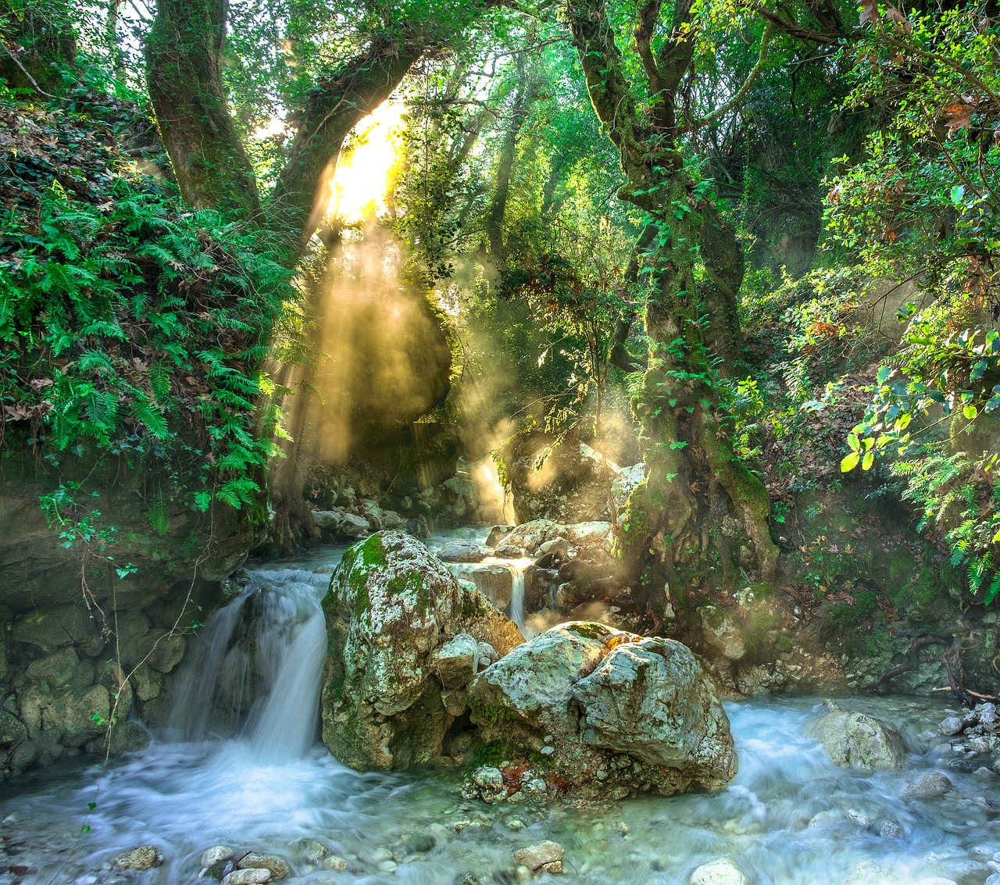

Discover Taniti
Taniti Island is your perfect tropical getaway with pristine beaches, lush rainforests, and vibrant culture. Come explore our beautiful island!

Top Attractions

Active Volcano
Experience the thrill of hiking up Taniti's active volcano and enjoy breathtaking views from the summit.

Rainforest Exploration
Discover the rich biodiversity of Taniti's tropical rainforest on guided tours and nature walks.

White Sandy Beaches
Relax and unwind on Taniti's pristine white sandy beaches, perfect for sunbathing and swimming.